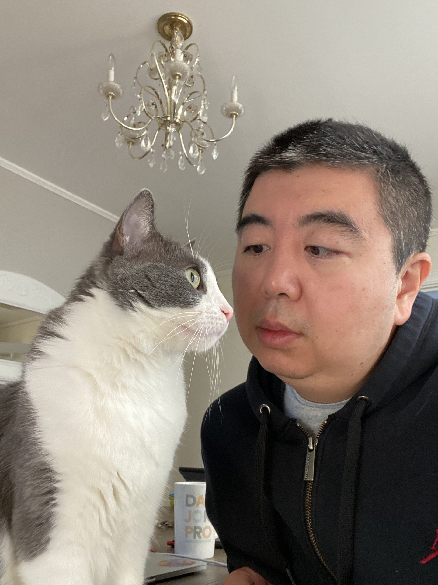

Quick Links to Research | Teaching | Curriculum Vitae |
Areas of Specialization: Metaphysics, Chinese Philosophy, Comparative Philosophy
Areas of Competence: Philosophy of Language, Philosophy of Science, Philosophy of Religion, Early Modern Philosophy
I am an associate professor of philosophy and CLAS-Honors preceptor of philosophy, jointly appointed by the philosophy department and the Honors college at the University of Maine. I received my PhD in philosophy with a minor in the history and philosophy of science from Indiana University, Bloomington, my MA in philosophy (ethics concentration), BA in philosophy, and BA in economics (dual degree) from Peking University.
My primary research area is metaphysics broadly construed, including contemporary analytic metaphysics, the history of metaphysics, and comparative metaphysics. I think and write on topics in metaphysics and in the overlap between metaphysics and philosophy of language in the analytic-philosophical style by engaging with theoretical resources in various philosophical traditions. Topics that I am especially interested in include metaphysical anti-realism, truthmaking, and metaphysical explanation.
At UMaine, I regularly teach a wide range of philosophy courses, including Introduction to Philosophy, Classical Chinese Philsophy, History of Modern Philosophy, and Metaphysics. I also teach first- and second-year seminars in the Honors College.
I hold a personal interest in meta-philosophy. However, I believe that the question "What is philosophy?" cannot, and should not, be answered within a specific philosophical tradition; rather, any inquiry into meta-philosophy should start with broadening one's vision of philosophies. Trained as an analytic philosopher, I currently enjoy reading contemporary continental philosophy in my spare time.
Outside of philosophy, I enjoy avant-garde art (film, music, etc.), punk rock, watching sports, playing basketball, cooking, and hiking.